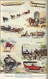

transport

Definition: Transport (in British English), or transportation (in American English), is the intentional movement of humans, animals, and goods from one location to another. Modes of transport include air, land (rail and road), water, cable, pipeline, and space. The field can be divided into infrastructure, vehicles, and operations. Transport enables human trade, which is essential for the development of civilizations.
Source: Wikipedia
Wikipedia Page
Wikidata Page
Occurs in: